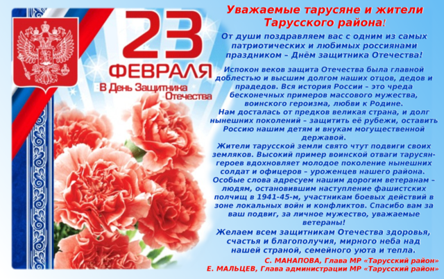

Уважаемые посетители!

Я рад приветствовать вас на сайте администрации МР "Тарусский район". Надеюсь, что вы найдете здесь интересную и полезную информацию.
Евгений Михайлович Мальцев, Глава администрации


Я рад приветствовать вас на сайте администрации МР "Тарусский район". Надеюсь, что вы найдете здесь интересную и полезную информацию.
Евгений Михайлович Мальцев, Глава администрации

15 февраля 2014 года в Тарусе прошли мероприятия, посвящённые 25-летию вывода советских войск из Афганистана. В память о погибших воинах в соборе св.Петра и Павла отслужили панихиду. К мемориальной доске воинам-интернационалистам были возложены цветы и венки.
ПодробнееС 27 января 2014 года в круглосуточном режиме по вопросам проведения капитального ремонта начала работу диспетчерская служба государственной жилищной инспекции Калужской области.
Телефон горячей линии:
Мы верим, что Вы не останетесь равнодушными к беде, которая произошла с маленьким тарусянином Артёмкой.
Если каждый из нас внесёт маленькую часть из того, что необходимо для его лечения, то мы сможем победить онкологическое заболевание, которое угрожает его жизни.
Реквизиты:
Калужский газовый и энергетический акционерный банк "Газэнергобанк" (открытое акционерное общество)
248030, г.Калуга, ул.Плеханова, 4
Тел. 71-58-15, 56-16-41
Банковские реквизиты:
БИК 042908701, ИНН 4026006420, КПП 402801001
к/сч. 301 01 810 6 000 000 00 701 в ГРКЦ ГУ Банка России по Калужской области
Получатель: Конакова Анна Игоревна
Депозиты физ. лиц «До востребования»
л/с 42301810000000333897
В назначении платежа указать дополнительно:
Перевод не связан с предпринимательской деятельностью.
Форум ученического самоуправления центрального федерального округа РФ пройдет с 3 по 5 марта 2014 года на базе ЗОЛ «Галактика» (Калужская область, Жуковский район, д. Стрелковка). В ходе Форума будут организованы 2 площадки:
Заявки на участие принимаются до 22 февраля 2014 года по телефону 2-52-30.
6 декабря 2013 года открылся филиал государственного бюджетного учреждения Калужской области «Многофункциональный центр предоставления государственных и муниципальных услуг Калужской области» по Тарусскому району. МФЦ на бесплатной основе предоставляет следующие услуги населению:
МФЦ располагается по адресу: г. Таруса, ул. Луначарского, д.14 (здание почты России).
Режим работы:
понедельник-пятница с 8:00 до 20:00;
суббота с 8:00 до 17:00,
воскресенье - выходной.
Все услуги предоставляются на бесплатной основе.
Дополнительную информацию можно получить по телефону 2-53-23.
Министерством образования и науки в 2013-2015 годах проводится эксперимент по предоставлению молодым женщинам в возрасте до 23 лет, имеющим одного и более детей, возможности пройти обучение на подготовительных отделениях федеральных государственных организаций высшего образования.
На подготовительном отделении молодых женщин будут готовить к сдаче единого государственного экзамена (ЕГЭ).
В эксперименте участвует 51 ВУЗ в 50 субъектах Российской Федерации
Перечень образовательных учреждений, участвующих в эксперименте.Обучение осуществляется за счет ассигнований федерального бюджета. Обучение для молодых мам – бесплатно.
Прием на обучение в рамках эксперимента осуществляется на основании личного заявления молодой женщины о приеме на подготовительное отделение, содержащего сведения о том, что у молодой женщины нет высшего образования, она не обучается по образовательным программам высшего образования, не проходила и не проходит обучение на подготовительных курсах, к которому прилагаются следующие документы:
Обучение возможно по очной, очно-заочной, заочной форме с применением дистанционных образовательных технологий и электронного обучения.
Дополнительная информация об эксперименте